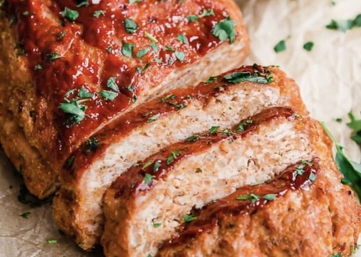

Turkey Meatloaf with Zucchini and Feta

Description
This savory meatloaf is a flavorful twist on a classic, blending ground meat with shredded zucchini for added moisture and a boost of veggies. Crumbled feta cheese adds a tangy richness throughout, creating a perfectly balanced and hearty dish that's both comforting and nutritious.
Ingredients
- 1/4 cup breadcrumbs
- 1/8 cup milk
- 1 lb. ground turkey
- 1 beaten egg
- 1 t onion powder
- 1 t garlic powder
- 1/2 t salt
- 1/2 t pepper
- 1/2 t italian seasoning
- 1/2 T Worcestershire sauce
- 1/2 cup feta
- 1 cup shredded zucchni, water squeezed out
- 1/2 cup marinara sauce, divided
Directions
- Preheat oven to 350 degrees.
- In a large bowl, mix together the milk and breadcrumbs until it forms a paste.
- Add in the ground turkey, egg, seasonings, Worcestershire sauce, feta cheese, zucchini and 1/4 cup of the marinara.
- Mix until all the ingredients are combined.
- Place on a baking pan sprayed with cooking spray and form into a loaf.
- Spread the last 1/4 cup of marinara sauce over the top.
- Cook for 1 hour and 15 minutes.
- Let sit for 5 minutes before serving.
Home